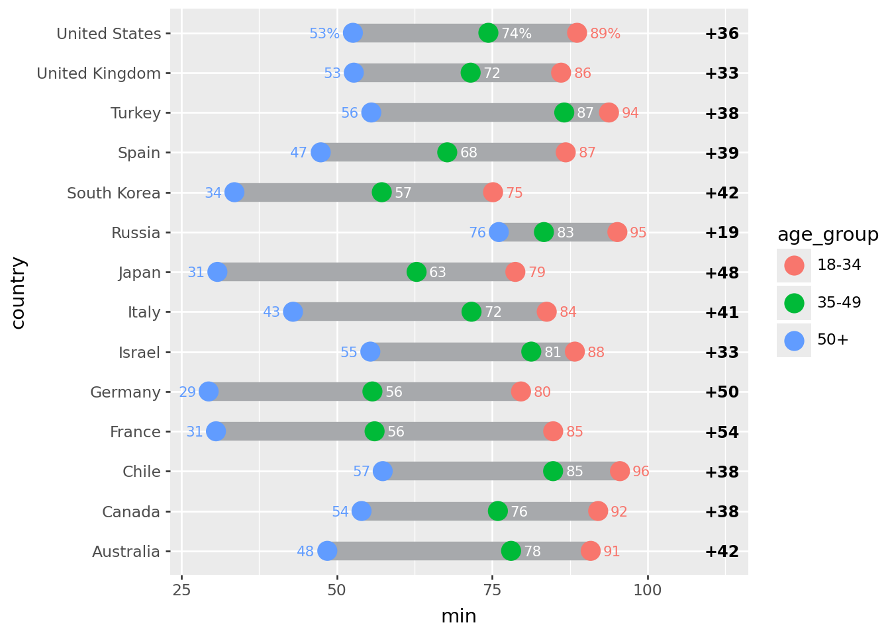

# NOTE: This notebook uses the polars package
import numpy as np
from plotnine import *
import polars as pl
from polars import colAn Elaborate Range Plot
segment

Comparing the point to point difference of many similar variables
Read the data.
Source: Pew Research Global Attitudes Spring 2015
!head -n 20 "data/survey-social-media.csv"PSRAID,COUNTRY,Q145,Q146,Q70,Q74
100000,Ethiopia,Female,35,No,
100001,Ethiopia,Female,25,No,
100002,Ethiopia,Male,40,Don’t know,
100003,Ethiopia,Female,30,Don’t know,
100004,Ethiopia,Male,22,No,
100005,Ethiopia,Male,40,No,
100006,Ethiopia,Female,20,No,
100007,Ethiopia,Female,18,No,No
100008,Ethiopia,Male,50,No,
100009,Ethiopia,Male,35,No,
100010,Ethiopia,Female,20,No,
100011,Ethiopia,Female,30,Don’t know,
100012,Ethiopia,Male,60,No,
100013,Ethiopia,Male,18,No,
100014,Ethiopia,Male,40,No,
100015,Ethiopia,Male,28,Don’t know,
100016,Ethiopia,Female,55,Don’t know,
100017,Ethiopia,Male,30,Don’t know,
100018,Ethiopia,Female,22,No, columns = dict(
COUNTRY="country",
Q145="gender",
Q146="age",
Q70="use_internet",
Q74="use_social_media",
)
data = (
pl.scan_csv(
"data/survey-social-media.csv",
dtypes=dict(Q146=pl.Utf8),
)
.rename(columns)
.select(["country", "age", "use_social_media"])
.collect()
)
data.sample(10, seed=123)/tmp/ipykernel_3524/3539732853.py:10: DeprecationWarning: the argument `dtypes` for `scan_csv` is deprecated. It was renamed to `schema_overrides` in version 0.20.31.
shape: (10, 3)
| country | age | use_social_media |
|---|---|---|
| str | str | str |
| "India" | "23" | " " |
| "Pakistan" | "18" | " " |
| "Peru" | "39" | "Yes" |
| "Jordan" | "56" | " " |
| "United Kingdom" | "35" | "Yes" |
| "Chile" | "24" | "Yes" |
| "Israel" | "32" | "No" |
| "Pakistan" | "39" | "No" |
| "Chile" | "26" | "Yes" |
| "Nigeria" | "43" | "Yes" |
Create age groups for users of social media
yes_no = ["Yes", "No"]
valid_age_groups = ["18-34", "35-49", "50+"]
rdata = (
data.with_columns(
age_group=pl.when(col("age") <= "34")
.then(pl.lit("18-34"))
.when(col("age") <= "49")
.then(pl.lit("35-49"))
.when(col("age") < "98")
.then(pl.lit("50+"))
.otherwise(pl.lit("")),
country_count=pl.count().over("country"),
)
.filter(
col("age_group").is_in(valid_age_groups) & col("use_social_media").is_in(yes_no)
)
.group_by(["country", "age_group"])
.agg(
# social media use percentage
sm_use_percent=(col("use_social_media") == "Yes").sum() * 100 / pl.count(),
# social media question response rate
smq_response_rate=col("use_social_media").is_in(yes_no).sum()
* 100
/ col("country_count").first(),
)
.sort(["country", "age_group"])
)
rdata.head()/tmp/ipykernel_3524/3994701628.py:13: DeprecationWarning: `pl.count()` is deprecated. Please use `pl.len()` instead.
(Deprecated in version 0.20.5)
/tmp/ipykernel_3524/3994701628.py:21: DeprecationWarning: `pl.count()` is deprecated. Please use `pl.len()` instead.
(Deprecated in version 0.20.5)
shape: (5, 4)
| country | age_group | sm_use_percent | smq_response_rate |
|---|---|---|---|
| str | str | f64 | f64 |
| "Argentina" | "18-34" | 90.883191 | 35.1 |
| "Argentina" | "35-49" | 84.40367 | 21.8 |
| "Argentina" | "50+" | 67.333333 | 15.0 |
| "Australia" | "18-34" | 90.862944 | 19.621514 |
| "Australia" | "35-49" | 78.04878 | 20.418327 |
Top 14 countries by response rate to the social media question.
def col_format(name, fmt):
# Format useing python formating
# for more control over
return col(name).map_elements(lambda x: fmt.format(x=x))
def float_to_str_round(name):
return col_format(name, "{x:.0f}")
n = 14
top = (
rdata.group_by("country")
.agg(r=col("smq_response_rate").sum())
.sort("r", descending=True)
.head(n)
)
top_countries = top["country"]
expr = float_to_str_round("sm_use_percent")
expr_pct = expr + "%"
point_data = rdata.filter(col("country").is_in(top_countries)).with_columns(
col("country").cast(pl.Categorical),
sm_use_percent_str=pl.when(col("country") == "France")
.then(expr_pct)
.otherwise(expr),
)
point_data.head()/tmp/ipykernel_3524/2682800770.py:24: DeprecationWarning: `is_in` with a collection of the same datatype is ambiguous and deprecated.
Please use `implode` to return to previous behavior.
See https://github.com/pola-rs/polars/issues/22149 for more information.
sys:1: MapWithoutReturnDtypeWarning: Calling `map_elements` without specifying `return_dtype` can lead to unpredictable results. Specify `return_dtype` to silence this warning.
sys:1: MapWithoutReturnDtypeWarning: Calling `map_elements` without specifying `return_dtype` can lead to unpredictable results. Specify `return_dtype` to silence this warning.
shape: (5, 5)
| country | age_group | sm_use_percent | smq_response_rate | sm_use_percent_str |
|---|---|---|---|---|
| cat | str | f64 | f64 | str |
| "Australia" | "18-34" | 90.862944 | 19.621514 | "91" |
| "Australia" | "35-49" | 78.04878 | 20.418327 | "78" |
| "Australia" | "50+" | 48.479087 | 52.390438 | "48" |
| "Canada" | "18-34" | 92.063492 | 25.099602 | "92" |
| "Canada" | "35-49" | 75.925926 | 21.513944 | "76" |
segment_data = (
point_data.group_by("country")
.agg(
min=col("sm_use_percent").min(),
max=col("sm_use_percent").max(),
)
.with_columns(gap=(col("max") - col("min")))
.sort(
"gap",
)
.with_columns(
min_str=float_to_str_round("min"),
max_str=float_to_str_round("max"),
gap_str=float_to_str_round("gap"),
)
)
segment_data.head()sys:1: MapWithoutReturnDtypeWarning: Calling `map_elements` without specifying `return_dtype` can lead to unpredictable results. Specify `return_dtype` to silence this warning.
sys:1: MapWithoutReturnDtypeWarning: Calling `map_elements` without specifying `return_dtype` can lead to unpredictable results. Specify `return_dtype` to silence this warning.
sys:1: MapWithoutReturnDtypeWarning: Calling `map_elements` without specifying `return_dtype` can lead to unpredictable results. Specify `return_dtype` to silence this warning.
shape: (5, 7)
| country | min | max | gap | min_str | max_str | gap_str |
|---|---|---|---|---|---|---|
| cat | f64 | f64 | f64 | str | str | str |
| "Russia" | 76.07362 | 95.151515 | 19.077896 | "76" | "95" | "19" |
| "Israel" | 55.405405 | 88.311688 | 32.906283 | "55" | "88" | "33" |
| "United Kingdom" | 52.74463 | 86.096257 | 33.351627 | "53" | "86" | "33" |
| "United States" | 52.597403 | 88.669951 | 36.072548 | "53" | "89" | "36" |
| "Canada" | 53.986333 | 92.063492 | 38.077159 | "54" | "92" | "38" |
Format the floating point data that will be plotted into strings
First plot
# The right column (youngest-oldest gap) location
xgap = 112
(
ggplot()
# Range strip
+ geom_segment(
segment_data,
aes(x="min", xend="max", y="country", yend="country"),
size=6,
color="#a7a9ac",
)
# Age group markers
+ geom_point(
point_data,
aes("sm_use_percent", "country", color="age_group", fill="age_group"),
size=5,
stroke=0.7,
)
# Age group percentages
+ geom_text(
point_data.filter(col("age_group") == "50+"),
aes(
x="sm_use_percent-2",
y="country",
label="sm_use_percent_str",
color="age_group",
),
size=8,
ha="right",
)
+ geom_text(
point_data.filter(col("age_group") == "35-49"),
aes(x="sm_use_percent+2", y="country", label="sm_use_percent_str"),
size=8,
ha="left",
va="center",
color="white",
)
+ geom_text(
point_data.filter(col("age_group") == "18-34"),
aes(
x="sm_use_percent+2",
y="country",
label="sm_use_percent_str",
color="age_group",
),
size=8,
ha="left",
)
# gap difference
+ geom_text(
segment_data,
aes(x=xgap, y="country", label="gap_str"),
size=9,
fontweight="bold",
format_string="+{}",
)
)
Tweak it
# The right column (youngest-oldest gap) location
xgap = 115
(
ggplot()
# Background Strips # new
+ geom_segment(
segment_data,
aes(y="country", yend="country"),
x=0,
xend=101,
size=8.5,
color="#edece3",
)
# vertical grid lines along the strips # new
+ annotate(
"segment",
x=list(range(10, 100, 10)) * n,
xend=list(range(10, 100, 10)) * n,
y=np.tile(np.arange(1, n + 1), 9) - 0.25,
yend=np.tile(np.arange(1, n + 1), 9) + 0.25,
color="#CCCCCC",
)
# Range strip
+ geom_segment(
segment_data,
aes(x="min", xend="max", y="country", yend="country"),
size=6,
color="#a7a9ac",
)
# Age group markers
+ geom_point(
point_data,
aes("sm_use_percent", "country", color="age_group", fill="age_group"),
size=5,
stroke=0.7,
)
# Age group percentages
+ geom_text(
point_data.filter(col("age_group") == "50+"),
aes(
x="sm_use_percent-2",
y="country",
label="sm_use_percent_str",
color="age_group",
),
size=8,
ha="right",
)
+ geom_text(
point_data.filter(col("age_group") == "35-49"),
aes(x="sm_use_percent+2", y="country", label="sm_use_percent_str"),
size=8,
ha="left",
va="center",
color="white",
)
+ geom_text(
point_data.filter(col("age_group") == "18-34"),
aes(
x="sm_use_percent+2",
y="country",
label="sm_use_percent_str",
color="age_group",
),
size=8,
ha="left",
)
# countries right-hand-size (instead of y-axis) # new
+ geom_text(
segment_data,
aes(y="country", label="country"),
x=-1,
size=8,
ha="right",
fontweight="bold",
color="#222222",
)
# gap difference
+ geom_vline(xintercept=xgap, color="#edece3", size=32) # new
+ geom_text(
segment_data,
aes(x=xgap, y="country", label="gap_str"),
size=9,
fontweight="bold",
format_string="+{}",
)
# Annotations # new
+ annotate("text", x=31, y=n + 1.1, label="50+", size=9, color="#ea9f2f", va="top")
+ annotate(
"text", x=56, y=n + 1.1, label="35-49", size=9, color="#6d6e71", va="top"
)
+ annotate(
"text", x=85, y=n + 1.1, label="18-34", size=9, color="#939c49", va="top"
)
+ annotate(
"text",
x=xgap,
y=n + 0.5,
label="Youngest-\nOldest Gap",
size=9,
color="#444444",
va="bottom",
ha="center",
)
+ annotate("point", x=[31, 56, 85], y=n + 0.3, alpha=0.85, stroke=0)
+ annotate(
"segment",
x=[31, 56, 85],
xend=[31, 56, 85],
y=n + 0.3,
yend=n + 0.8,
alpha=0.85,
)
+ annotate(
"hline",
yintercept=[x + 0.5 for x in range(2, n, 2)],
alpha=0.5,
linetype="dotted",
size=0.7,
)
# Better spacing and color # new
+ scale_x_continuous(limits=(-18, xgap + 2))
+ scale_y_discrete(expand=(0, 0.25, 0.1, 0))
+ scale_fill_manual(values=["#c3ca8c", "#d1d3d4", "#f2c480"])
+ scale_color_manual(values=["#939c49", "#6d6e71", "#ea9f2f"])
+ guides(color=None, fill=None)
+ theme_void()
+ theme(figure_size=(8, 8.5))
)Instead of looking at this plot as having a country variable on the y-axis and a percentage variable on the x-axis, we can view it as having vertically stacked up many indepedent variables, the values of which have a similar scale.